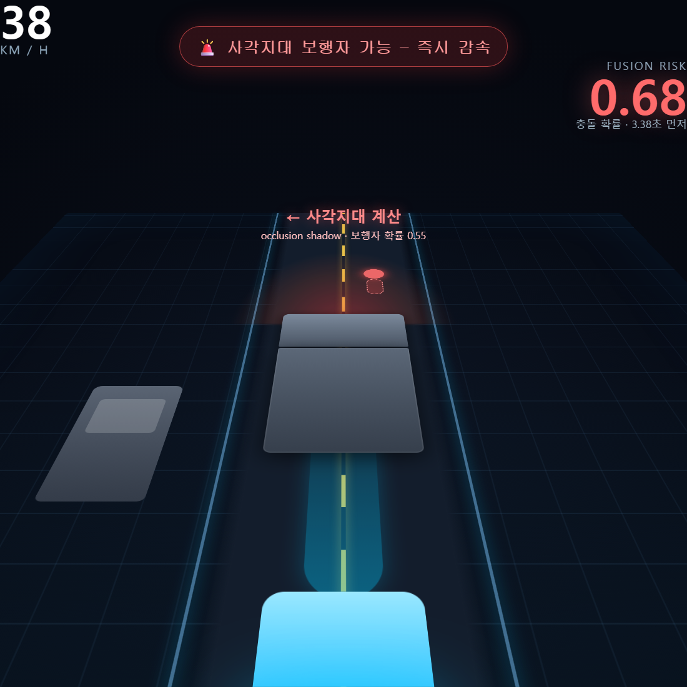

07
/ 12
AI · Tesla급 인지 스택 (한국형)
보이는 걸 검출하는 게 아니라,
안 보이는 사각지대를 계산
합니다

Occupancy · BEV
입체 점유 계산 — 트럭 뒤
안 보이는 영역에 보행자가 있을 확률 0.55로 계산
. 충돌 위험 0.68 (실제 시스템 계산 결과를 시각화)
Tesla식 코어 + 한국 전용 인지
입체 점유 계산
사각지대까지 점유 확률로 추정
위험 예측 AI
충돌·근접 2종 위험 (자체 학습)
집단 학습
주행하며 위험 사례 자동 수집
의도 예측
가려진 보행자 등장 예측
차량 간 협력 인지
마주 차량 시점 병합 (한국 전용)
정류장 보행자 보정
버스 정차 구간 위험 +0.55 (한국 전용)
위험 예측 AI · 학습 성능
0.9403
정확도 지표 AUC · 목표 0.85 초과
0.9412
균형 정확도 F1
1.04
ms
추론 속도 · 실시간 가능
278
KB
폰에 탑재
✓ AI 학습도구 — 직접 학습한 모델
✓ AI 분석도구 — 온디바이스 객체 인식
대시캠은
보이는 것만
찍습니다. AuraView는
트럭 뒤 안 보이는 영역까지 확률로 계산
합니다.